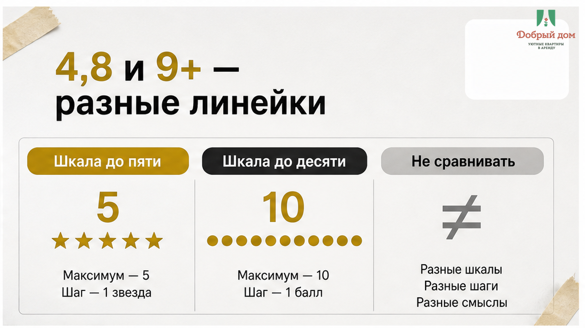
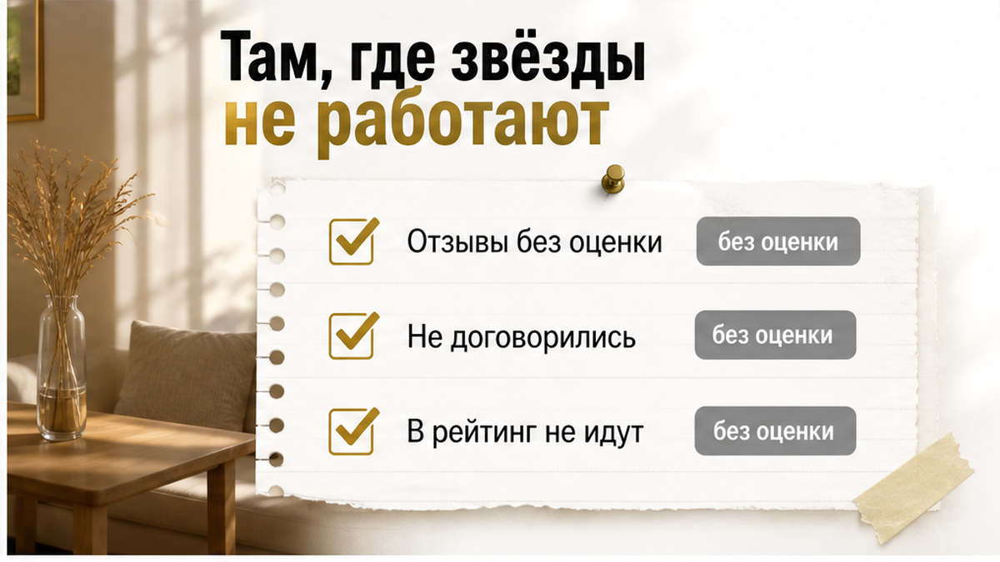
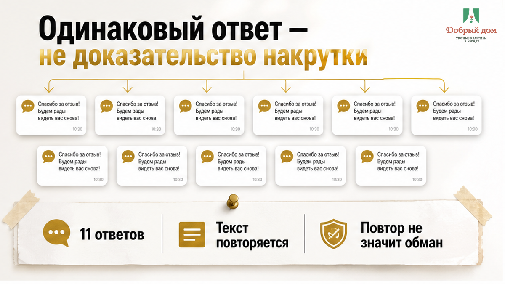
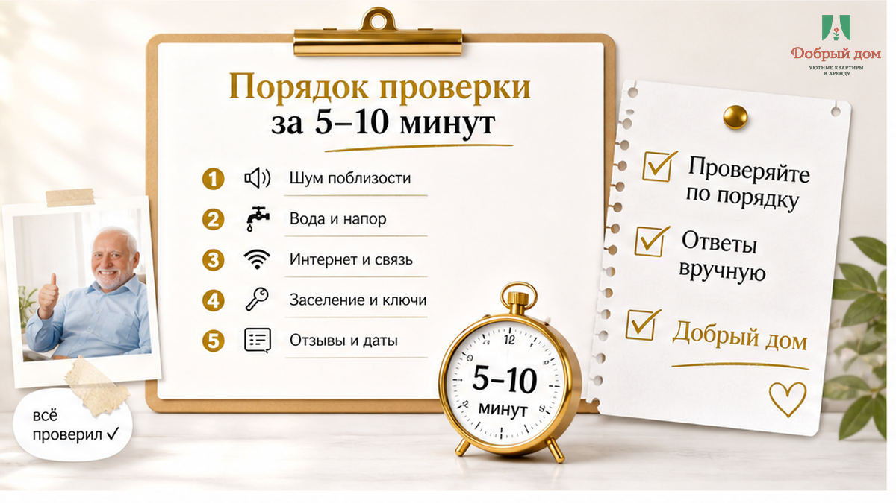

26 августа в 23:40 Андрей написал мне в чат с чужого объявления. Он ещё ничего не бронировал, но уже собирался в Тюмень на четыре ночи: командировка, квартира за 3 200 ₽ в сутки, 12 800 ₽ всего, предоплата картой прямо сейчас. На экране всё выглядело спокойно: рейтинг 4,8, одиннадцать отзывов, в каждом — «всё супер», «отличная квартира», «рекомендую». Данные карты Андрей уже ввёл. И только перед оплатой зачем-то пролистал страницу ниже. Три отзыва стояли одной датой. Под каждым хозяин отвечал одинаково, слово в слово: «Спасибо, ждём вас снова!» Одиннадцать раз подряд. Андрей закрыл оплату и спросил: «Это же накрутка? У вас так же будет?»
Нет. Так накрутку не доказывают. Одинаковые ответы хозяина — не улика против отзывов, а отдельный сигнал о самом хозяине: Авито прямо предупреждает, что шаблонные ответы выглядят как работа робота. А настоящая проблема в этой карточке лежала ещё на два экрана ниже — там, куда Андрей не долистал. И вот там уже можно было понять, чем рискуешь, если заплатишь сразу.
Я хост посуточной в Тюмени. Это «Добрый дом». Разборы отзывов и вопросы хозяину до оплаты выкладываю в Telegram, отвечаю в MAX. В тот вечер я ответил Андрею в трёх сообщениях. Сейчас покажу всю историю по порядку.

Сначала Андрей сравнивал ту квартиру с другими вариантами, но смотрел карточки на разных площадках. На Авито шкала идёт от 1 до 5, рейтинг считается как обычное среднее. На Суточно.ру шкала до 10, там есть отдельный фильтр «9+» и статус «Суперхозяева».
Поэтому 4,8 на Авито и 9,4 на Суточно.ру — не почти одинаковый результат. Это две разные системы, и переводить одну цифру в другую «на глаз» бессмысленно. Объекты имеет смысл сравнивать внутри одной площадки. Если хозяин в переписке говорит: «У нас везде почти девятка», он просто смешивает две шкалы.
Есть и другая особенность Авито. У частника рейтинг считается с первой оценки, у компании — после третьей. А звёзды конкретного объекта появляются только после трёх отзывов. Одна плохая оценка может сильно изменить картину: в примере самого Авито рейтинг 5,0 превращается в 3,5. Значит, и 4,8 при одиннадцати отзывах не означает, что плохого опыта не было. Он мог просто раствориться в среднем.

Главное Андрей увидел не сразу. На Авито отзывы разделены на четыре типа: «Проживание состоялось», «Не удалось заселиться», «Не договорились» и «Не общались». В рейтинг попадают только первые два. Остальные остаются в отдельном блоке — «Отзывы без оценки» — и на цифру 4,8 не влияют вообще.
В карточке было два таких отзыва. В первом гость писал, что двое суток не мог добиться ответа и в итоге снял другое жильё. Во втором хозяин предложил перевести деньги на карту, минуя площадку. Оба случая остались за пределами рейтинга. Четвёрка с хвостиком не сдвинулась ни на сотую.
Вот почему блок без оценки нельзя пролистывать как техническую мелочь. Там оказываются люди, которые не дошли до заселения. А именно в переписке до приезда часто становится понятно, будет ли у вас ключ, ответ хозяина и нормальная бронь. Пять звёзд после удачного проживания не перекрывают ситуацию, в которой человек два дня не мог получить ответ до оплаты.
Механика площадок тоже важна. С 15 июня 2023 года онлайн-бронирование посуточного жилья на Авито обязательно. После брони площадка сама запрашивает отзыв. На Суточно.ру отзыв можно оставить после брони через сервис, сделать это нужно в течение 14 дней после выезда, а публикация происходит одновременно после проверки. Поэтому история «конкурент просто пришёл и поставил единицу» не объясняет всё подряд: без брони отзыв на площадку не попадёт.

Теперь к одиннадцати одинаковым фразам под отзывами. Они не доказывают, что отзывы придуманы. Авито модерирует отзывы, удаляет фейки и может заблокировать аккаунт на 90 дней. При этом площадка отдельно объясняет хозяевам: копипаста в ответах выглядит как ответ робота.
То есть перед Андреем, скорее всего, был не мошенник, а человек, которому лень написать несколько разных строк. Но для гостя это всё равно неприятный сигнал. Если хозяину лень ответить на одиннадцать хороших отзывов, насколько ему будет не лень в 23:40 разбираться, почему у вас не открывается дверь?
Ответы хозяина нужно читать как самостоятельную часть страницы. Спокойное объяснение на негатив — «да, в марте был шум от соседей сверху, мы поменяли стеклопакет в спальне» — иногда говорит о владельце больше, чем десять сообщений «всё супер». Скандал в ответ на плохую оценку тоже многое показывает. А молчание может сказать ещё больше.
На Авито у хозяина есть сутки, чтобы ответить на негативный отзыв, и до трёх календарных дней на обжалование. На Суточно.ру на ответ даётся 30 дней. Если человек не воспользовался ни одним способом, это уже не просто нехватка времени, а его выбор.
4,8 с копипастой в ответах — вы бы бронировали или нет? Напишите в Telegram или MAX. Интересно, где для вас проходит граница между обычной ленью и сигналом остановиться.
Я читаю отзывы в одном порядке: сначала одну, две и три звезды, затем остальные. Не потому, что жду подвоха. Просто в пятёрках часто нет деталей: «всё супер» не рассказывает, насколько тихо в квартире, как работает горячая вода и кто встретит вас с ключами.
Нужна не сама эмоция, а повторяемость. Один гость написал «шумно» — возможно, он попал на свадьбу в соседнем подъезде. Три человека за полгода написали, что слышали музыку из бара внизу, — это уже свойство адреса. К вашему приезду оно само не исчезнет.
Я отдельно отмечаю жалобы на чистоту, шум, горячую воду, несовпадение с фотографиями, заселение и связь с хозяином. Последние две темы обычно самые дорогие. Стоять с чемоданом у подъезда и ждать, пока кто-то ответит, — совсем другой отдых. Поэтому про код от чужой двери при бесконтактном заселении я писал отдельно: если «долго ждал ключи» повторяется несколько раз, это уже не случайность.
Так же смотрите на выезд. Если в отзывах появляется «на выезде придрались», не считайте это мелочью. Иногда проблема начинается не при заселении, а когда вы уже торопитесь на вокзал. Историю о том, как залог на выезде обещали не вернуть, я тоже разбирал отдельно.
Даты важнее, чем кажется. Отзыв годичной давности может описывать уже не ту квартиру: за это время могли смениться хозяева, соседи и техника, а во дворе могла начаться стройка. Хорошо, когда в карточке есть свежие отзывы за последние месяцы. На Суточно.ру даты видны прямо в ленте, включая отзывы текущего лета.
У Андрея три отзыва стояли одной датой. Само по себе это не улика. У хозяина мог выехать целый коллектив, а площадка могла отправить запросы нескольким гостям одновременно. Но если к одинаковой дате добавляются одинаковые фразы и одинаковые по длине ответы, страницу лучше читать медленнее, а не быстрее.
Иногда отзывов нет совсем. На некоторых площадках для отдельных апартаментов они могут быть недоступны. Это не хороший и не плохой знак — просто ноль информации. Не нужно превращать отсутствие данных в уверенность. Лучше проверить квартиру другими способами, сверить условия с типичными скрытыми доплатами и задать вопрос до оплаты.
Самый быстрый способ проверить тревожный отзыв — не гадать по рейтингу, а спросить хозяина прямо. Например: «Жалоба на шум из отзывов ещё актуальна?» Если в карточке писали про воду, спрашивайте про воду. Если про ключи — про ключи.
По ответу обычно видно больше, чем по цифре. «Да, это было в марте, поставили новую дверь в подъезде, сейчас тихо» — конкретный ответ. «Какие отзывы?» — тоже ответ, только другого качества. А молчание до утра, когда вы готовы платить сегодня, показывает, что после оплаты быстрее, скорее всего, не станет.
Переписываться лучше в чате самой площадки. Там остаётся история: что обещали, когда отвечали и о чём договорились. Это важно не только для спокойствия, но и если понадобится официально обжаловать ситуацию.
Он не поехал по той карточке. Не из-за трёх отзывов, появившихся в один день. Даты заставили его присмотреться. Решение он принял из-за двух отзывов «Не договорились»: один человек не дождался ответа двое суток, второму предложили перевести деньги мимо площадки. Эти истории не влияли на 4,8, но напрямую касались того, что могло случиться с ним ещё до заселения.
Вот весь вывод. Сначала понять отзывы, потом платить. Рейтинг 4,8 — это не гарантия и не полное описание квартиры. Это среднее по тем отзывам, которые площадка включила в расчёт. Остальное лежит рядом: в низких оценках, в блоке «Отзывы без оценки», в датах и в ответах хозяина. Пять–десять минут проверки против 12 800 ₽ и четырёх испорченных ночей — нормальная цена за внимательность.

Этот порядок и готовые формулировки вопросов я держу в закреплённом сообщении в канале «Добрый дом» в Telegram.
Я отвечаю на каждый отзыв руками. Не пишу одиннадцать раз «Спасибо, ждём вас снова!». Если гость жалуется на шум или воду, в ответе указываю, что именно поменяли и когда. Следующему человеку важно увидеть не красивую отписку, а понять: проблему признали и закрыли или просто спрятали за вежливой фразой.
Бронь и переписку держу на площадке. У гостя остаётся история, а у меня нет соблазна решать всё словами, которые потом невозможно подтвердить. На вопросы отвечаю до оплаты: если что-то в отзывах смущает, лучше спросить заранее.
Написать можно в MAX или менеджеру в Telegram. Отвечаем до брони — так спокойнее и дешевле для всех.
Квартиры комфорт+ в Тюмени посуточно и на длинный срок: забронировать. Сайт «Добрый дом» — добрыйдом-72.рф. Вопросы по телефону: +7 (993) 574-83-22. Telegram: канал, менеджер — на связи; MAX — написать.